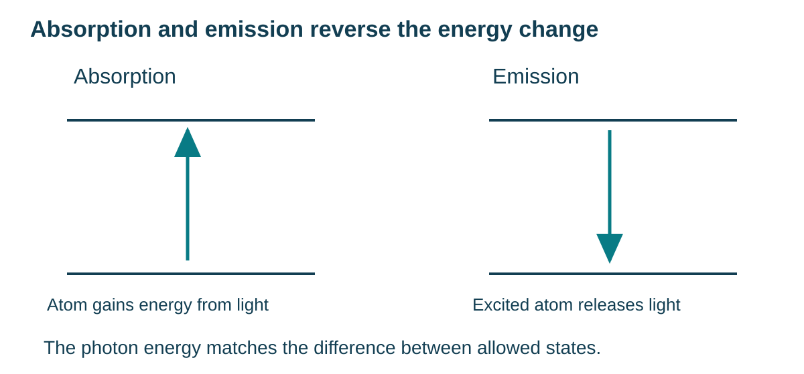
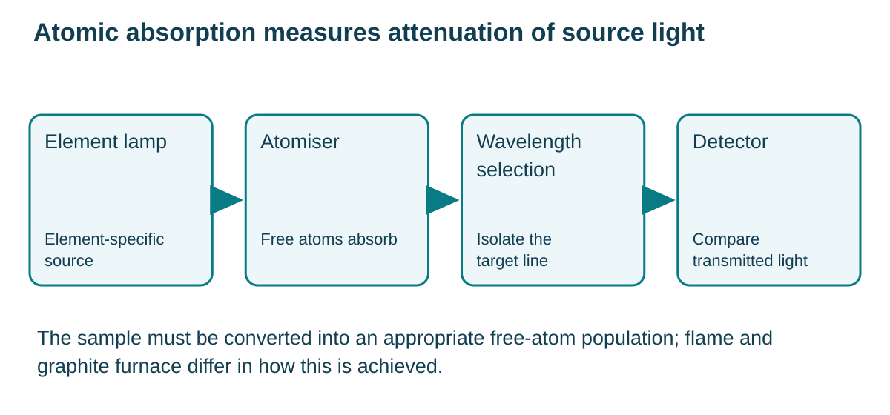
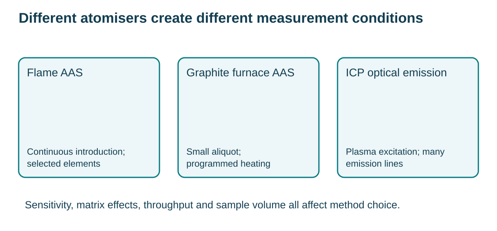
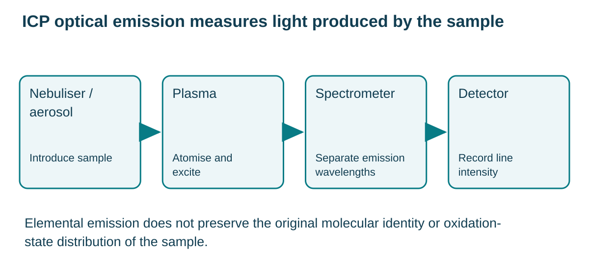
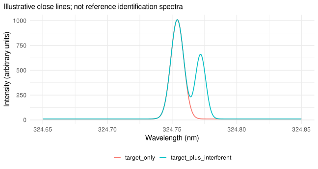
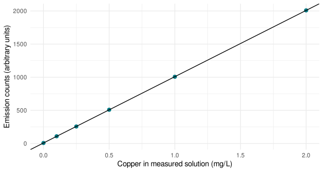
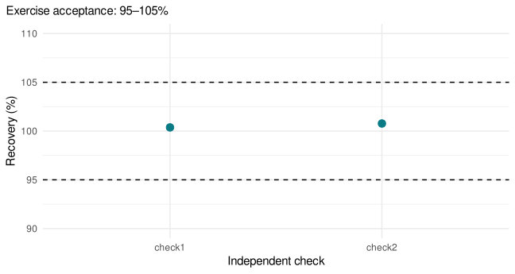
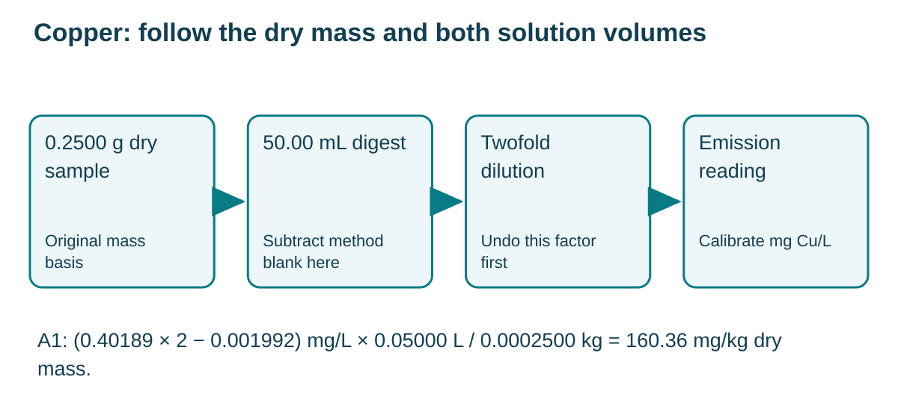
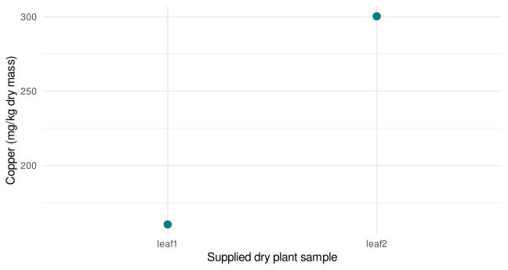

Atomic measurements
From elemental light to original dry mass
About this lecture
- Distinguish atomic absorption from optical emission.
- Inspect spectral overlap and independent quality checks.
- Undo dilution and correct the method blank on a common basis before reporting dry mass.
Which information survives atomisation?

An element amount can survive; original molecular identity generally does not.
Absorption supplies the photon
A source photon promotes a suitable free atom to a higher state.
Emission releases the photon
An excited population emits characteristic light during transitions.
Follow the AAS path

Element source → atomiser → selected wavelength → detector.
The flame introduces material continuously

Transport and atomisation affect sensitivity.
The graphite furnace treats a small aliquot
A heating program separates drying, matrix removal and atomisation.
Follow the ICP optical-emission path

Aerosol → plasma excitation → wavelength separation → detector.
Many elements means many possible lines
Line choice and background still matter.
Look around the target line

Which signal would a broad integration window include?
An interference need not look like a separate peak
Transport and chemical effects can change the target population.
Calibrate the introduced solution

Concentration axis: mg copper/L measured solution.
Check with independent material

Both supplied checks meet the exercise 95–105% rule.
Trace the sample mass and volumes

A1: 0.2500 g dry material → 50.00 mL digest → twofold dilution.
Convert the sample signal
A1 measured solution ≈ 0.40189 mg/L copper.
The method blank has a different dilution history

Blank digest is measured undiluted.
Subtract on a common basis
A1 digest: 0.40189 × 2 − 0.001992 = 0.80179 mg/L.
Recover amount, then divide by original mass

0.80179 mg/L × 0.05000 L / 0.0002500 kg = 160.36 mg/kg dry.
A blank has no sample mass denominator
No mg/kg plant result is assigned to the method blank.
Passing a dissolved check cannot prove digestion recovery
What material would better challenge the whole preparation?
Uncertainty needs more than counting noise

Mass, volume, calibration, blank variation and recovery can all contribute.
Choose among instruments for the question
Range, matrix, elements, sample volume, throughput and required uncertainty.
Transfer the blank and dry-mass basis
0.2000 g to 25.00 mL; fivefold dilution reads 0.0800 mg/L; blank digest 0.0100 mg/L.
Take the reasoning into R
By hand, embedded experiment and R tasks · Practice quiz.
Save the calculation and a chemical interpretation in your reproducible report.
Interactive experiment · Predict, change, explain.